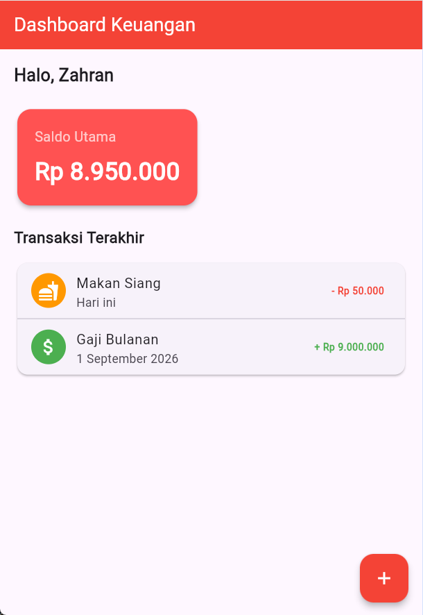
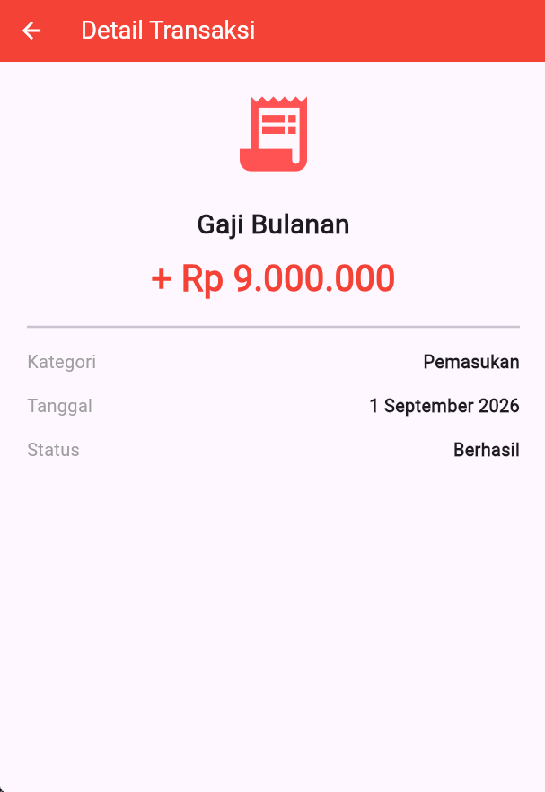
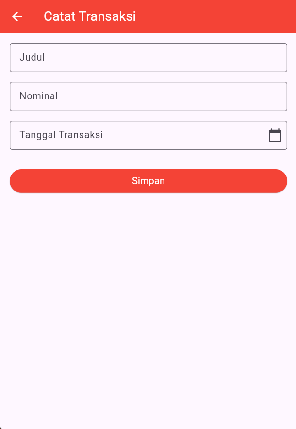

Pengembangan aplikasi mobile modern menuntut pembuatan antarmuka pengguna (User Interface) yang tidak hanya interaktif dan responsif, tetapi juga mampu mengelola navigasi antar halaman serta pengiriman data antar komponen (passing data) secara terstruktur. Framework Flutter, yang dikembangkan oleh Google menggunakan bahasa pemrograman Dart, menyediakan mekanisme navigasi berbasis Navigator untuk berpindah halaman serta pengelolaan formulir untuk pencatatan data.
Praktikum ini berfokus pada materi navigasi layar lanjutan dan pengelolaan formulir interaktif pada aplikasi Expense Tracker. Konsep dan teknologi utama yang diterapkan meliputi penggunaan StatelessWidget dan StatefulWidget, implementasi navigasi Navigator.push() dan Navigator.pop(), pengiriman data antar layar (Passing Data), penggunaan Form dan TextFormField, pemanfaatan TextEditingController untuk menangkap nilai input, validasi input menggunakan GlobalKey<FormState>, pemanggilan komponen interaktif showDatePicker untuk memilih tanggal, serta menampilkan umpan balik kepada pengguna menggunakan SnackBar.
Hubungan materi ini dengan pemrograman Dart/Flutter terletak pada penerapan struktur widget yang modular, di mana halaman utama (DashboardScreen) memuat ringkasan saldo dan daftar transaksi, halaman form (AddTransactionScreen) menangani penambahan data baru, dan halaman detail (TransactionDetailScreen) menampilkan informasi lengkap dari suatu transaksi yang dipilih. Pemanggilan metode setState() digunakan untuk memperbarui status tampilan, dan manajemen memori dilakukan melalui metode dispose() pada controller.
Materi ini sangat penting bagi mahasiswa Informatika karena pemahaman mengenai navigasi antar layar dan aliran data (data flow) merupakan fondasi utama dalam membangun aplikasi mobile multi-halaman yang kompleks dan dinamis.
Memahami konsep dasar navigasi antar layar di Flutter menggunakan Navigator.push() dan Navigator.pop().
Mampu menerapkan pengiriman data (passing data) dari satu layar ke layar lainnya melalui konstruktor widget.
Memahami struktur dan implementasi formulir interaktif di Flutter menggunakan widget Form dan TextFormField.
Menerapkan TextEditingController untuk mengelola, membaca, dan mereset nilai masukan teks.
Menggunakan GlobalKey<FormState> untuk melakukan validasi masukan formulir sebelum data diproses.
Mengintegrasikan fungsi pemilih tanggal asynchronous (showDatePicker) dan memformat string tanggal secara manual.
Menerapkan ScaffoldMessenger dan SnackBar untuk memberikan konfirmasi visual saat data transaksi disimpan.
Berikut adalah tahapan implementasi praktikum navigasi lanjutan dan pengelolaan formulir pada aplikasi Expense Tracker:
Nama/Judul Langkah: Konfigurasi Root App dan Halaman Utama Dashboard
Penjelasan Kode:
import 'package:flutter/material.dart';: Mengimpor pustaka Material Design untuk komponen UI Flutter.import 'dashboard_screen.dart';: Mengimpor berkas layar utama DashboardScreen.void main() => runApp(const MyApp());: Titik masuk utama aplikasi yang menjalankan widget MyApp.class MyApp extends StatelessWidget: Widget utama aplikasi yang bersifat statis.MaterialApp: Widget konfigurasi utama yang mengatur tema warna (primarySwatch: Colors.red) dan halaman awal (home).home: const DashboardScreen(): Menetapkan DashboardScreen sebagai tampilan pertama yang dibuka saat aplikasi dijalankan.Nama/Judul Langkah: Pembuatan Dashboard, Kartu Saldo, Daftar Transaksi, dan Tombol Navigasi
Penjelasan Kode:
FloatingActionButton: Tombol aksi mengambang dengan ikon tambah (Icons.add) yang diletakkan di sudut layar.Navigator.push(...): Berfungsi untuk berpindah dari layar DashboardScreen menuju layar AddTransactionScreen dengan menumpuk halaman baru di atas tumpukan navigasi (navigation stack).SingleChildScrollView: Membungkus konten agar dapat digulir secara vertikal guna mencegah masalah overflow._buildBalanceCard(): Fungsi pembantu (helper method) untuk merender kartu informasi saldo utama dengan sudut melengkung._buildTransactionList(context): Menampilkan daftar transaksi berbentuk kartu (Card) yang berisi komponen ListTile untuk setiap item transaksi, serta mendukung navigasi passing data ke TransactionDetailScreen saat item ditekan.Hasil Praktikum:

Nama/Judul Langkah: Implementasi Halaman Detail Transaksi dan Konstruktor Berparameter
Penjelasan Kode:
final String title, amount, category, date;: Variabel penampung data yang bersifat final karena widget ini berjenis StatelessWidget.Constructor required this.title, ...: Mewajibkan pengiriman parameter data saat widget dipanggil dari layar lain._buildDetailRow(): Widget pembantu untuk menyusun baris informasi detail secara sejajar menggunakan Row dan MainAxisAlignment.spaceBetween.Hasil Praktikum:

Nama/Judul Langkah: Implementasi Form Input, Date Picker, Validasi, dan Navigasi Pop
Penjelasan Kode:
_formKey = GlobalKey<FormState>(): Kunci unik untuk mengontrol status validasi seluruh elemen Form.TextEditingController: Mengontrol dan mengambil nilai teks dari input judul, nominal, serta tanggal.dispose(): Membersihkan memori controller saat widget dihancurkan untuk mencegah kebocoran memori (memory leak)._selectDate(): Fungsi asynchronous yang menampilkan dialog showDatePicker untuk memilih tanggal, lalu memformatnya menjadi string "DD/MM/YYYY" menggunakan padLeft.readOnly: true pada input tanggal: Mencegah pengguna mengetik secara bebas dan memaksa pemilihan melalui kalender._formKey.currentState!.validate(): Memeriksa apakah seluruh validasi pada kolom input bernilai benar.Navigator.pop(context): Berfungsi untuk menutup halaman form dan kembali ke layar dashboard sebelumnya setelah data berhasil divalidasi dan disimpan.Hasil Praktikum:

Navigator.push() untuk membuka halaman baru dan Navigator.pop() untuk kembali ke halaman sebelumnya.
required.
Form, TextFormField, dan TextEditingController memudahkan proses pengelolaan serta pengambilan data masukan pengguna.
GlobalKey<FormState> untuk memastikan integritas data sebelum diproses lebih lanjut.
showDatePicker) dan pemformatan string manual memberikan kemudahan serta fleksibilitas dalam pemilihan tanggal transaksi.